mixed_models_poisson
Annual models from DMED data.
Scope:
CONUS Army Installations:
Fort Jackson, SC (Basic Combat Training site)
Fort Benning, GA (Basic Combat Training site)
Fort Bragg, NC
Fort Campbell, KY
Fort Polk, LA
Fort Hood, TX
Fort Stewart, GA
Fort Leonard Wood, MO (Basic Combat Training site)
Fort Riley, KS
Fort Irwin, CA
Fort Bliss, TX
Population: Active-duty Army service members
Outcome: Ambulatory (Out-patient), 1997 - 2018 / Hospitalization (In-Patient), 1990-2018 / Reportable Events, 1995 - 2018
Annual Count / Rate of Heat Stress Illness (any type, primary diagnosis)
Exposure indices:
“Absolute” indices
Annual mean (full-year): temperature, heat index, WBGT
Annual heat risk days / hours - Heat index above 80 / 90 / 103 / 125 °F - WBGT above 82 / 85 / 88 / 90 °F
“Relative” indices (averaged over full-year and heat season months) Annual mean daily anomaly: temperature, heat index, WBGT
Annual maximum daily anomaly: temperature, heat index, WBGT
Days mean temperature index above daily climate normal percentile (averaged over all hours of day)
- temperature, heat index, WBGT above 85th / 90th / 95th percentiles
Days maximum temperature index above daily climate normal maximum percentile
- temperature, heat index, WBGT above 85th / 90th / 95th percentiles
Days mean temperature index above Standard Deviation(s) of mean daily temperature climate normal
- temperature, heat index, WBGT above 1 or 2 standard deviations of daily normal
Days maximum temperature index above Standard Deviation(s) of max daily temperature climate normal
- temperature, heat index, WBGT above 1 or 2 standard deviations of maximum daily normal
# Outcomes
dmed_tidy <-
read_rds("data/dmed_tidy.rds")
dmed_tidy## # A tibble: 11,955 x 9
## type category year count population rate location strata hsi
## <fct> <fct> <int> <dbl> <dbl> <dbl> <fct> <fct> <fct>
## 1 Ambulatory Data Male 1997 0 6057. 0 jackson gender hexhsa~
## 2 Ambulatory Data Female 1997 0 2749. 0 jackson gender hexhsa~
## 3 Ambulatory Data Total 1997 0 8806. 0 jackson gender hexhsa~
## 4 Hospitalizatio~ Male 1997 0 6057. 0 jackson gender hexhsa~
## 5 Hospitalizatio~ Female 1997 0 2749. 0 jackson gender hexhsa~
## 6 Hospitalizatio~ Total 1997 0 8806. 0 jackson gender hexhsa~
## 7 Reportable Eve~ Male 1997 0 6057. 0 jackson gender hexhsa~
## 8 Reportable Eve~ Female 1997 0 2749. 0 jackson gender hexhsa~
## 9 Reportable Eve~ Total 1997 0 8806. 0 jackson gender hexhsa~
## 10 Ambulatory Data Male 1998 0 6456. 0 jackson gender hexhsa~
## # ... with 11,945 more rows# Exposures
annual_tables_list <-
read_rds("data/annual_tables_list.rds")
annual_tables_list## # A tibble: 25 x 2
## # Groups: installation [25]
## installation data
## <chr> <list<df[,31]>>
## 1 eglin_afb [86 x 31]
## 2 fort_benning_ga [86 x 31]
## 3 fort_bliss [86 x 31]
## 4 fort_bragg [86 x 31]
## 5 fort_campbell [86 x 31]
## 6 fort_carson [86 x 31]
## 7 fort_drum [86 x 31]
## 8 fort_gordon [86 x 31]
## 9 fort_hood [86 x 31]
## 10 fort_jackson [86 x 31]
## # ... with 15 more rowsindex_heat_key <-
readxl::read_excel("data/index_heat_key.xlsx")
index_heat_key## # A tibble: 84 x 4
## index description index_type index_var
## <chr> <chr> <chr> <chr>
## 1 tmp_f_mean Annual mean heat index (full calendar year) Absolute T
## 2 heat_index_~ Annual mean WBGT (full calendar year) Absolute HI
## 3 wbgt_f_mean Annual mean temperature (full calendar yea~ Absolute WBGT
## 4 tmp_f_max Maximum temperature during the year Absolute T
## 5 heat_index_~ Maximum heat index during the year Absolute HI
## 6 wbgt_f_max Maximum WBGT during the year Absolute WBGT
## 7 tmp_f_min Minimum temperature during the year Absolute T
## 8 heat_index_~ Minimum heat index during the year Absolute HI
## 9 wbgt_f_min Minimum WBGT during the year Absolute WBGT
## 10 tmp_f_sd Standard deviation of hourly temperatures ~ Absolute T
## # ... with 74 more rows# write_rds(index_heat_key, "data/index_heat_key.rds")dmed_population <-
dmed_tidy %>%
filter(!location %in% c("us", "overseas"),
type == "Ambulatory Data",
hsi == "all",
strata == "gender",
category == "Total") %>%
dplyr::select(location, year, population) %>%
mutate(location = dplyr::recode(location, jackson = "fort_jackson"),
location = dplyr::recode(location, benning = "fort_benning_ga"),
location = dplyr::recode(location, bragg = "fort_bragg"),
location = dplyr::recode(location, campbell = "fort_campbell"),
location = dplyr::recode(location, polk = "fort_polk"),
location = dplyr::recode(location, hood = "fort_hood"),
location = dplyr::recode(location, stewart = "fort_stewart"),
location = dplyr::recode(location, leonardwood = "fort_leonard_wood"),
location = dplyr::recode(location, riley = "fort_riley"),
location = dplyr::recode(location, irwin = "ntc_and_fort_irwin"),
location = dplyr::recode(location, bliss = "fort_bliss"),
location = as.character(location))
index_long <-
annual_tables_list %>%
filter(installation %in% c("fort_benning_ga", "fort_bragg", "fort_campbell", "fort_jackson",
"fort_polk", "fort_hood", "fort_stewart", "fort_leonard_wood", "fort_riley",
"ntc_and_fort_irwin", "fort_bliss")) %>%
unnest(data) %>%
pivot_longer(., cols = `1990`:`2019`, names_to = "year", values_to = "value") %>%
mutate(year = as.integer(year))
hsi_rates <-
dmed_tidy %>%
filter(location %in% c("benning", "bragg", "campbell", "jackson",
"polk", "hood", "stewart", "leonardwood",
"riley", "irwin", "bliss"),
type == "Ambulatory Data",
hsi == "all",
strata == "gender",
category == "Total") %>%
dplyr::select(location, year, rate) %>%
dplyr::mutate(location = dplyr::recode(location, jackson = "fort_jackson"),
location = dplyr::recode(location, benning = "fort_benning_ga"),
location = dplyr::recode(location, bragg = "fort_bragg"),
location = dplyr::recode(location, campbell = "fort_campbell"),
location = dplyr::recode(location, polk = "fort_polk"),
location = dplyr::recode(location, hood = "fort_hood"),
location = dplyr::recode(location, stewart = "fort_stewart"),
location = dplyr::recode(location, leonardwood = "fort_leonard_wood"),
location = dplyr::recode(location, riley = "fort_riley"),
location = dplyr::recode(location, irwin = "ntc_and_fort_irwin"),
location = dplyr::recode(location, bliss = "fort_bliss"),
location = as.character(location))
# Ambulatory HSI
hsi_amb <-
dmed_tidy %>%
filter(location %in% c("benning", "bragg", "campbell", "jackson",
"polk", "hood", "stewart", "leonardwood",
"riley", "irwin", "bliss"),
type == "Ambulatory Data",
hsi == "all",
strata == "gender",
category == "Total") %>%
dplyr::select(location, year, count, population) %>%
dplyr::mutate(location = dplyr::recode(location, jackson = "fort_jackson"),
location = dplyr::recode(location, benning = "fort_benning_ga"),
location = dplyr::recode(location, bragg = "fort_bragg"),
location = dplyr::recode(location, campbell = "fort_campbell"),
location = dplyr::recode(location, polk = "fort_polk"),
location = dplyr::recode(location, hood = "fort_hood"),
location = dplyr::recode(location, stewart = "fort_stewart"),
location = dplyr::recode(location, leonardwood = "fort_leonard_wood"),
location = dplyr::recode(location, riley = "fort_riley"),
location = dplyr::recode(location, irwin = "ntc_and_fort_irwin"),
location = dplyr::recode(location, bliss = "fort_bliss"),
location = as.character(location),
rate = (count / population) * 1000)
# Hospitalization HSI
hsi_hosp <-
dmed_tidy %>%
filter(location %in% c("benning", "bragg", "campbell", "jackson",
"polk", "hood", "stewart", "leonardwood",
"riley", "irwin", "bliss"),
type == "Hospitalizations",
hsi == "all",
strata == "gender",
category == "Total") %>%
dplyr::select(location, year, count, population) %>%
dplyr::mutate(location = dplyr::recode(location, jackson = "fort_jackson"),
location = dplyr::recode(location, benning = "fort_benning_ga"),
location = dplyr::recode(location, bragg = "fort_bragg"),
location = dplyr::recode(location, campbell = "fort_campbell"),
location = dplyr::recode(location, polk = "fort_polk"),
location = dplyr::recode(location, hood = "fort_hood"),
location = dplyr::recode(location, stewart = "fort_stewart"),
location = dplyr::recode(location, leonardwood = "fort_leonard_wood"),
location = dplyr::recode(location, riley = "fort_riley"),
location = dplyr::recode(location, irwin = "ntc_and_fort_irwin"),
location = dplyr::recode(location, bliss = "fort_bliss"),
location = as.character(location),
rate = (count / population) * 1000)
# Reportable Events Counts
hsi_rme <-
dmed_tidy %>%
filter(location %in% c("benning", "bragg", "campbell", "jackson",
"polk", "hood", "stewart", "leonardwood",
"riley", "irwin", "bliss"),
type == "Reportable Events",
hsi == "all",
strata == "gender",
category == "Total") %>%
dplyr::select(location, year, count, population) %>%
dplyr::mutate(location = dplyr::recode(location, jackson = "fort_jackson"),
location = dplyr::recode(location, benning = "fort_benning_ga"),
location = dplyr::recode(location, bragg = "fort_bragg"),
location = dplyr::recode(location, campbell = "fort_campbell"),
location = dplyr::recode(location, polk = "fort_polk"),
location = dplyr::recode(location, hood = "fort_hood"),
location = dplyr::recode(location, stewart = "fort_stewart"),
location = dplyr::recode(location, leonardwood = "fort_leonard_wood"),
location = dplyr::recode(location, riley = "fort_riley"),
location = dplyr::recode(location, irwin = "ntc_and_fort_irwin"),
location = dplyr::recode(location, bliss = "fort_bliss"),
location = as.character(location),
rate = (count / population) * 1000)
# Join with Annual heat; assign Basic Combat Training (BCT) category
# Ambultatory
joined_hsi_amb <-
index_long %>%
left_join(hsi_amb, by = c("installation" = "location", "year" = "year")) %>%
drop_na(count) %>%
mutate(bct = case_when(installation %in% c("fort_benning_ga", "fort_jackson", "fort_leonard_wood") ~ 1,
!installation %in% c("fort_benning_ga", "fort_jackson", "fort_leonard_wood") ~ 0)) %>%
ungroup() %>%
dplyr::group_by(index) %>%
mutate(value_scaled = scale(value, center = TRUE, scale = TRUE)) %>%
ungroup() %>%
na.omit()
# Hospitalization
# Join to indices of heat; assign BCT status; center and scale heat index value (pooled, for each index)
joined_hsi_hosp <-
index_long %>%
left_join(hsi_hosp, by = c("installation" = "location", "year" = "year")) %>%
drop_na(count) %>%
mutate(bct = case_when(installation %in% c("fort_benning_ga", "fort_jackson", "fort_leonard_wood") ~ 1,
!installation %in% c("fort_benning_ga", "fort_jackson", "fort_leonard_wood") ~ 0)) %>%
ungroup() %>%
dplyr::group_by(index) %>%
mutate(value_scaled = scale(value, center = TRUE, scale = TRUE)) %>%
ungroup() %>%
na.omit()
# write_rds(joined_hsi_hosp, "data/joined_hsi_hosp.rds", compress = "none")
# Reportable Events
joined_hsi_rme <-
index_long %>%
left_join(hsi_rme, by = c("installation" = "location", "year" = "year")) %>%
drop_na(count) %>%
mutate(bct = case_when(installation %in% c("fort_benning_ga", "fort_jackson", "fort_leonard_wood") ~ 1,
!installation %in% c("fort_benning_ga", "fort_jackson", "fort_leonard_wood") ~ 0)) %>%
ungroup() %>%
dplyr::group_by(index) %>%
mutate(value_scaled = scale(value, center = TRUE, scale = TRUE)) %>%
ungroup() %>%
na.omit()
# write_rds(joined_hsi_rme, "data/joined_hsi_rme.rds", compress = "none")Plots of HSI Ambulatory Counts
joined_hsi_amb %>%
ggplot(aes(x = year, y = population, color = installation, shape = installation)) +
geom_line() +
geom_point() +
labs(
title = "Population",
y = "Population",
x = "Year"
) +
scale_shape_manual(values = 0:11) +
theme_bw() 
joined_hsi_amb %>%
ggplot(aes(x = count)) +
geom_histogram(color = "darkblue", fill = "lightblue") +
facet_wrap(installation ~ .) +
labs(
title = "Army Heat Stress Illness Ambulatory Counts, 1997-2018",
y = "Installation",
x = "HSI count"
) +
theme_bw() ## `stat_bin()` using `bins = 30`. Pick better value with `binwidth`.Examine single index of heat (out of 80+ indices)
Annual hours WBGT greater than 85 deg F
joined_hsi_amb %>%
filter(index %in% "hours_wbgt_gt85") %>%
ggplot(aes(x = year, y = count)) +
geom_point() +
geom_smooth(method = lm, se = FALSE, size = 0.8) +
labs(
title = "Army Heat Stress Illness Ambulatory Counts",
x = "Year",
y = "HSI count"
) +
theme_bw() 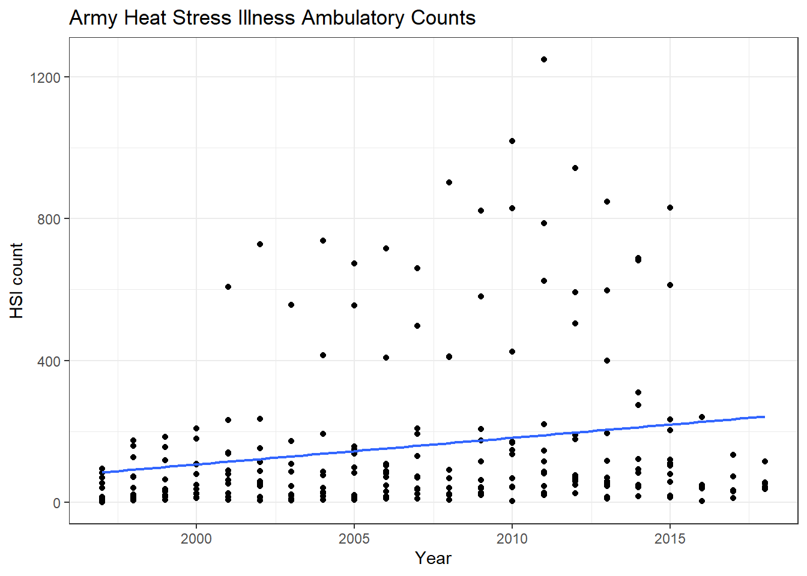
joined_hsi_amb %>%
filter(index %in% "hours_wbgt_gt85") %>%
ggplot(aes(x = year, y = count, color = installation, shape = installation)) +
geom_point() +
geom_smooth(method = lm, se = FALSE, size = 0.8) +
labs(
title = "Army Heat Stress Illness Ambulatory Counts",
x = "Year",
y = "HSI count"
) +
theme_bw() ## Warning: The shape palette can deal with a maximum of 6 discrete values because
## more than 6 becomes difficult to discriminate; you have 11. Consider
## specifying shapes manually if you must have them.## Warning: Removed 110 rows containing missing values (geom_point).
joined_hsi_amb %>%
filter(index %in% "hours_wbgt_gt85") %>%
ggplot(aes(x = value, y = count, color = installation, shape = installation)) +
geom_point() +
geom_smooth(method = lm, se = FALSE, size = 0.8) +
labs(
title = "Army Heat Stress Illness Ambulatory Counts at 11 Installations (1997-2018)",
x = "Hours WBGT > 85 deg F",
y = "HSI count"
) +
scale_shape_manual(values = 0:11) +
theme_bw() 
joined_hsi_amb %>%
filter(index %in% "hours_wbgt_gt85") %>%
ggplot(aes(x = value, y = fct_reorder(installation, value))) +
ggridges::geom_density_ridges(
jittered_points = TRUE,
aes(point_color = installation, point_fill = installation),
alpha = 0.5,
point_alpha = 1) +
labs(
title = "Hours WBGT exceeding 85 deg F, 1997-2018",
y = "Installation",
x = "Hours WBGT > 85"
) +
theme_bw() +
theme(legend.position = "none")## Picking joint bandwidth of 31.8
Observational Findings
- Ambulatory HSI rates increased over time.
- WBGT temperatures increased over time.
- Slopes of HSI rate change vary by installation.
- Slopes of WBGT increase are consistent by installation (clusters below 100 hours/year and above 200 hours/year).
- HSI rates increase with the number of hours of WBGT exceeding 85 deg F.
- Slopes of HSI rate increases with hours WBGT > 85 vary by installation (among installations with the highest HSI rates).
Models
# Assign dataset; center and scale predictor value
data_hours_wbgt_gt85_counts <-
joined_hsi_amb %>%
filter(index %in% "hours_wbgt_gt85")# Fitting ‘installation’ as a fixed effect in model M1 assumes
# the 11 ‘installation’ means are all independent of one another,
# and share a common residual variance
pooled <- glm(count ~ value + installation, data = data_hours_wbgt_gt85_counts)
summary(pooled)
pooled_offset <- glm(count ~ value + installation, data = data_hours_wbgt_gt85_counts, offset = log(population))
summary(pooled_offset)
# Fitting installation as a random intercept model in model M2 assumes that the 1 measured
# installation means are only a subset of the realised possibilities drawn from a ‘global’ set of
# population means that follow a Normal distribution with its own mean and variance.
random_intercept <- glmer(count ~ value_scaled + (1|installation), data = data_hours_wbgt_gt85_counts, family = poisson, offset = log(population))
# Fitting random intercepts and slopes allows the slope of a
# predictor to vary based on a separate grouping variable.
poisson_mod <- glm(count ~ value_scaled + installation, data = data_hours_wbgt_gt85_counts, family = poisson)
sjPlot::tab_model(poisson_mod, p.val = "kr", show.df = TRUE)
poisson_mod_offset <- glm(count ~ value_scaled + installation, data = data_hours_wbgt_gt85_counts, family = poisson, offset = log(population))
sjPlot::tab_model(poisson_mod, poisson_mod_offset, p.val = "kr", show.df = TRUE)
random_intercept_slope_no_offset <- glmer(count ~ value_scaled + (1 + value_scaled|installation), data = data_hours_wbgt_gt85_counts, family = poisson)
summary(random_intercept_slope_no_offset)Poisson with population offset, mixed effects (random intercepts and slopes)
random_intercept_slope <- glmer(count ~ value_scaled + (1 + value_scaled|installation), data = data_hours_wbgt_gt85_counts, family = poisson, offset = log(population))
summary(random_intercept_slope)## Generalized linear mixed model fit by maximum likelihood (Laplace
## Approximation) [glmerMod]
## Family: poisson ( log )
## Formula: count ~ value_scaled + (1 + value_scaled | installation)
## Data: data_hours_wbgt_gt85_counts
## Offset: log(population)
##
## AIC BIC logLik deviance df.resid
## 13324.9 13342.4 -6657.5 13314.9 237
##
## Scaled residuals:
## Min 1Q Median 3Q Max
## -20.8749 -3.4961 -0.6351 3.0096 29.6322
##
## Random effects:
## Groups Name Variance Std.Dev. Corr
## installation (Intercept) 0.9081 0.9529
## value_scaled 0.2928 0.5411 0.71
## Number of obs: 242, groups: installation, 11
##
## Fixed effects:
## Estimate Std. Error z value Pr(>|z|)
## (Intercept) -4.8636 0.2976 -16.344 < 2e-16 ***
## value_scaled 0.5932 0.1835 3.233 0.00122 **
## ---
## Signif. codes: 0 '***' 0.001 '**' 0.01 '*' 0.05 '.' 0.1 ' ' 1
##
## Correlation of Fixed Effects:
## (Intr)
## value_scald 0.722sjPlot::tab_model(random_intercept_slope, p.val = "kr", show.df = TRUE)## Warning: mu of 0.0 is too close to zero, estimate of random effect variances may be unreliable.| count | |||
|---|---|---|---|
| Predictors | Incidence Rate Ratios | CI | p |
| (Intercept) | 0.01 | 0.00 – 0.01 | <0.001 |
| value_scaled | 1.81 | 1.26 – 2.59 | 0.001 |
| Random Effects | |||
| σ2 | 5.57 | ||
| τ00 installation | 0.91 | ||
| τ11 installation.value_scaled | 0.29 | ||
| ρ01 installation | 0.71 | ||
| ICC | 0.18 | ||
| N installation | 11 | ||
| Observations | 242 | ||
| Marginal R2 / Conditional R2 | 0.049 / 0.218 | ||
random_intercept_slope_bct <- glmer(count ~ value_scaled + bct + (1 + value_scaled|installation), data = data_hours_wbgt_gt85_counts, family = poisson, offset = log(population))
summary(random_intercept_slope_bct)## Generalized linear mixed model fit by maximum likelihood (Laplace
## Approximation) [glmerMod]
## Family: poisson ( log )
## Formula: count ~ value_scaled + bct + (1 + value_scaled | installation)
## Data: data_hours_wbgt_gt85_counts
## Offset: log(population)
##
## AIC BIC logLik deviance df.resid
## 13324.1 13345.1 -6656.1 13312.1 236
##
## Scaled residuals:
## Min 1Q Median 3Q Max
## -20.8725 -3.4952 -0.6261 3.0073 29.6230
##
## Random effects:
## Groups Name Variance Std.Dev. Corr
## installation (Intercept) 0.7030 0.8385
## value_scaled 0.2912 0.5396 0.70
## Number of obs: 242, groups: installation, 11
##
## Fixed effects:
## Estimate Std. Error z value Pr(>|z|)
## (Intercept) -5.0670 0.2875 -17.624 < 2e-16 ***
## value_scaled 0.5928 0.1834 3.232 0.00123 **
## bct 0.7413 0.4180 1.773 0.07616 .
## ---
## Signif. codes: 0 '***' 0.001 '**' 0.01 '*' 0.05 '.' 0.1 ' ' 1
##
## Correlation of Fixed Effects:
## (Intr) vl_scl
## value_scald 0.663
## bct -0.391 0.016broom::glance(random_intercept_slope_bct)## # A tibble: 1 x 6
## sigma logLik AIC BIC deviance df.residual
## <dbl> <dbl> <dbl> <dbl> <dbl> <int>
## 1 1 -6656. 13324. 13345. 11683. 236broom::tidy(random_intercept_slope_bct)## Warning in bind_rows_(x, .id): binding factor and character vector, coercing
## into character vector## Warning in bind_rows_(x, .id): binding character and factor vector, coercing
## into character vector## # A tibble: 6 x 6
## term estimate std.error statistic p.value group
## <chr> <dbl> <dbl> <dbl> <dbl> <chr>
## 1 (Intercept) -5.07 0.288 -17.6 1.62e-69 fixed
## 2 value_scaled 0.593 0.183 3.23 1.23e- 3 fixed
## 3 bct 0.741 0.418 1.77 7.62e- 2 fixed
## 4 sd_(Intercept).installation 0.838 NA NA NA installa~
## 5 sd_value_scaled.installation 0.540 NA NA NA installa~
## 6 cor_(Intercept).value_scaled~ 0.702 NA NA NA installa~sjPlot::tab_model(random_intercept_slope_bct, p.val = "kr", show.df = TRUE)## Warning: mu of 0.0 is too close to zero, estimate of random effect variances may be unreliable.| count | |||
|---|---|---|---|
| Predictors | Incidence Rate Ratios | CI | p |
| (Intercept) | 0.01 | 0.00 – 0.01 | <0.001 |
| value_scaled | 1.81 | 1.26 – 2.59 | 0.001 |
| bct | 2.10 | 0.92 – 4.76 | 0.076 |
| Random Effects | |||
| σ2 | 5.57 | ||
| τ00 installation | 0.70 | ||
| τ11 installation.value_scaled | 0.29 | ||
| ρ01 installation | 0.70 | ||
| ICC | 0.15 | ||
| N installation | 11 | ||
| Observations | 242 | ||
| Marginal R2 / Conditional R2 | 0.074 / 0.214 | ||
Plot models
sjPlot::plot_model(random_intercept_slope_bct)
sjPlot::plot_model(random_intercept_slope_bct, type = "pred", terms = "value_scaled")sjPlot::plot_model(random_intercept_slope_bct, type = "re", terms = "value_scaled")
sjPlot::plot_model(random_intercept_slope_bct, type = "resid", terms = "value_scaled")sjPlot::plot_model(random_intercept_slope_bct, type = "diag", terms = "value_scaled")## $installationTable of index means and standard deviations (pooled)
For interpreting centered and scaled estimates.
index_mean_sd <-
joined_hsi_amb %>%
group_by(index) %>%
summarise(
mean = mean(value),
sd = sd(value)
)
index_mean_sd## # A tibble: 84 x 3
## index mean sd
## <chr> <dbl> <dbl>
## 1 days_heat_index_gt85pct 23.5 12.8
## 2 days_heat_index_gt85pct_may_sep 4.53 5.11
## 3 days_heat_index_gt90pct 11.0 8.19
## 4 days_heat_index_gt90pct_may_sep 1.56 2.65
## 5 days_heat_index_gt95pct 2.64 3.33
## 6 days_heat_index_gt95pct_may_sep 0.252 0.728
## 7 days_heat_index_max_gt1sd 79.1 29.8
## 8 days_heat_index_max_gt1sd_may_sep 36.6 19.3
## 9 days_heat_index_max_gt2sd 20.3 16.2
## 10 days_heat_index_max_gt2sd_may_sep 11.4 10.8
## # ... with 74 more rowsMultiple Models Function
random_slope_bct_function = function(df) {
df %>%
glmer(count ~ value_scaled + bct + (1 + value_scaled|installation), data = ., family = poisson, offset = log(population))
}
# Ambulatory nested models
random_slope_bct_nest <-
joined_hsi_amb %>%
dplyr::select(index, everything()) %>%
nest(data = installation:value_scaled) %>%
mutate(glmer_models = map(data, random_slope_bct_function),
glance = map(glmer_models, broom::glance),
tidy = map(glmer_models, broom::tidy),
augment = map(glmer_models, broom::augment))## boundary (singular) fit: see ?isSingularrandom_slope_bct_nest ## # A tibble: 84 x 6
## index data glmer_models glance tidy augment
## <chr> <list<df[,8> <list> <list> <list> <list>
## 1 tmp_f_mean [242 x 8] <glmerMod> <tibble [1 ~ <tibble [6~ <df[,16] [242~
## 2 heat_index~ [242 x 8] <glmerMod> <tibble [1 ~ <tibble [6~ <df[,16] [242~
## 3 wbgt_f_mean [242 x 8] <glmerMod> <tibble [1 ~ <tibble [6~ <df[,16] [242~
## 4 tmp_f_max [242 x 8] <glmerMod> <tibble [1 ~ <tibble [6~ <df[,16] [242~
## 5 heat_index~ [242 x 8] <glmerMod> <tibble [1 ~ <tibble [6~ <df[,16] [242~
## 6 wbgt_f_max [242 x 8] <glmerMod> <tibble [1 ~ <tibble [6~ <df[,16] [242~
## 7 tmp_f_min [242 x 8] <glmerMod> <tibble [1 ~ <tibble [6~ <df[,16] [242~
## 8 heat_index~ [242 x 8] <glmerMod> <tibble [1 ~ <tibble [6~ <df[,16] [242~
## 9 wbgt_f_min [242 x 8] <glmerMod> <tibble [1 ~ <tibble [6~ <df[,16] [242~
## 10 tmp_f_sd [242 x 8] <glmerMod> <tibble [1 ~ <tibble [6~ <df[,16] [242~
## # ... with 74 more rowsrandom_slope_bct_nest$index %>% View()
# Check singular fit models
map(random_slope_bct_nest$glmer_models, isSingular) %>%
unlist() %>%
tibble::enframe(name = NULL) %>%
mutate(index = random_slope_bct_nest$index) %>%
filter(value %in% "TRUE")## # A tibble: 1 x 2
## value index
## <lgl> <chr>
## 1 TRUE days_wbgt_gt95pct_may_sep# Remove `days_wbgt_gt95pct_may_sep`: singular fit model
random_slope_bct_nest <-
random_slope_bct_nest %>%
filter(!index %in% "days_wbgt_gt95pct_may_sep")
# write_rds(random_slope_bct_nest, "data/random_slope_bct_nest.rds", compress = "none")
# Model summaries
# Arranged by magnitude of index value estimate
random_slope_bct_nest %>%
unnest(tidy, .drop = TRUE) %>%
dplyr::select(index, term:group) %>%
filter(term %in% "value_scaled") %>%
arrange(desc(estimate))## # A tibble: 83 x 7
## index term estimate std.error statistic p.value group
## <chr> <chr> <dbl> <dbl> <dbl> <dbl> <chr>
## 1 hours_wbgt_gt82 value_scaled 1.41 0.603 2.34 0.0192 fixed
## 2 heat_index_mean value_scaled 1.09 0.219 4.99 0.000000594 fixed
## 3 tmp_f_mean value_scaled 0.964 0.195 4.93 0.000000823 fixed
## 4 wbgt_f_mean value_scaled 0.848 0.205 4.15 0.0000338 fixed
## 5 days_hi_gt80 value_scaled 0.699 0.231 3.02 0.00249 fixed
## 6 days_wbgt_gt82 value_scaled 0.664 0.148 4.48 0.00000758 fixed
## 7 hours_hi_gt80 value_scaled 0.637 0.160 3.99 0.0000670 fixed
## 8 hours_wbgt_gt85 value_scaled 0.593 0.183 3.23 0.00123 fixed
## 9 hours_hi_gt90 value_scaled 0.580 0.120 4.84 0.00000130 fixed
## 10 hours_wbgt_gt90 value_scaled 0.544 0.237 2.29 0.0220 fixed
## # ... with 73 more rows# Arranged by magnitude of "bct" estimate
random_slope_bct_nest %>%
unnest(tidy, .drop = TRUE) %>%
dplyr::select(index, term:group) %>%
filter(term %in% "bct") %>%
arrange(desc(estimate))## # A tibble: 83 x 7
## index term estimate std.error statistic p.value group
## <chr> <chr> <dbl> <dbl> <dbl> <dbl> <chr>
## 1 tmp_f_mean bct 2.32 0.554 4.19 2.81e-5 fixed
## 2 heat_index_mean bct 2.13 0.732 2.91 3.63e-3 fixed
## 3 hours_hi_gt80 bct 1.84 0.868 2.12 3.42e-2 fixed
## 4 wbgt_f_mean bct 1.68 0.675 2.49 1.26e-2 fixed
## 5 heat_index_mean_anomaly_me~ bct 1.68 0.745 2.26 2.39e-2 fixed
## 6 days_hi_gt80 bct 1.64 0.603 2.72 6.54e-3 fixed
## 7 tmp_f_max_anomaly_mean bct 1.62 0.578 2.81 4.96e-3 fixed
## 8 days_tmp_max_gt1sd bct 1.54 0.570 2.70 6.94e-3 fixed
## 9 tmp_f_mean_anomaly_mean_ma~ bct 1.53 0.633 2.41 1.59e-2 fixed
## 10 tmp_f_max_anomaly_mean_may~ bct 1.52 0.557 2.72 6.47e-3 fixed
## # ... with 73 more rows# Arranged by AIC (lower is better)
random_slope_bct_nest %>%
unnest(glance, .drop = TRUE) %>%
dplyr::select(index, sigma:df.residual) %>%
arrange(AIC)## # A tibble: 83 x 7
## index sigma logLik AIC BIC deviance df.residual
## <chr> <dbl> <dbl> <dbl> <dbl> <dbl> <int>
## 1 days_wbgt_max_gt85pct 1 -6227. 12466. 12487. 10821. 236
## 2 days_hi_gt80 1 -6234. 12481. 12502. 10825. 236
## 3 days_heat_index_max_gt1sd 1 -6243. 12499. 12520. 10857. 236
## 4 days_heat_index_max_gt90pct 1 -6247. 12507. 12528. 10861. 236
## 5 days_wbgt_max_gt90pct 1 -6310. 12631. 12652. 10988. 236
## 6 days_wbgt_max_gt1sd 1 -6330. 12672. 12693. 11025. 236
## 7 days_heat_index_max_gt95pct 1 -6333. 12678. 12699. 11036. 236
## 8 days_heat_index_max_gt85pct 1 -6404. 12821. 12842. 11177. 236
## 9 hours_hi_gt80 1 -6430. 12872. 12893. 11228. 236
## 10 days_wbgt_max_gt2sd 1 -6455. 12921. 12942. 11272. 236
## # ... with 73 more rowsPlot estimates of all nested models
#random_slope_bct_nest %>%
# pull(glmer_models) %>%
# map(sjPlot::plot_model)
#
#
# Plot 10
models_10_names <-
random_slope_bct_nest %>%
unnest(tidy, .drop = TRUE) %>%
dplyr::select(index, term:group) %>%
filter(term %in% "value_scaled") %>%
arrange(desc(estimate)) %>%
slice(1:10) %>%
pull(index)
models_10 <-
random_slope_bct_nest %>%
filter(index %in% models_10_names) %>%
pull(glmer_models)
map2(.x = models_10, .y = models_10_names, .f = ~ sjPlot::plot_model(.x, title = .y)) ## [[1]]##
## [[2]]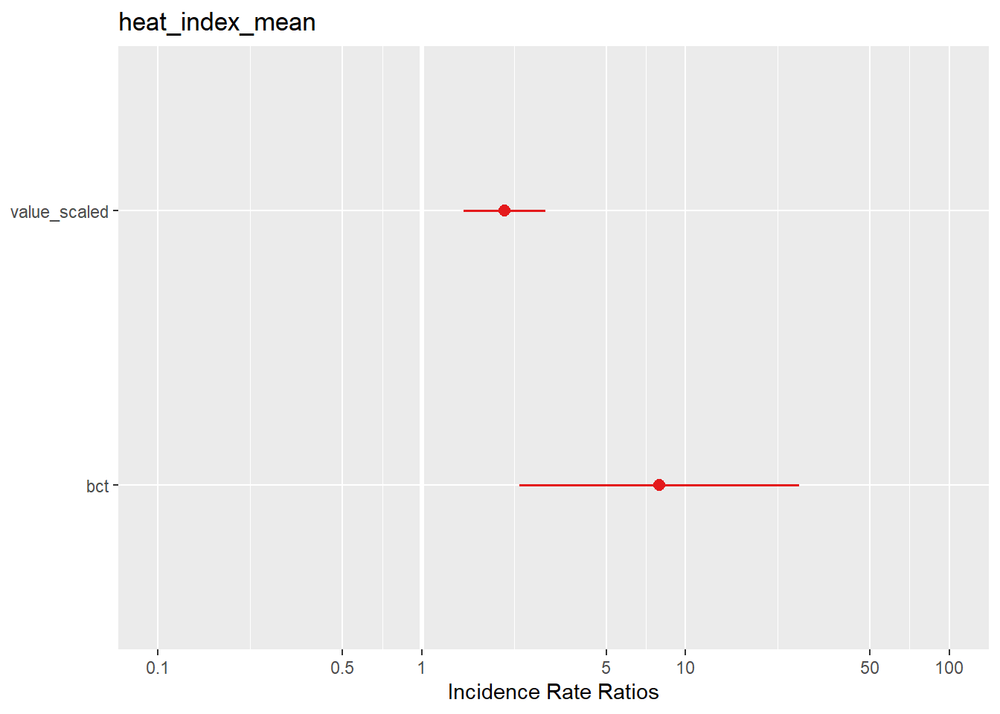
##
## [[3]]
##
## [[4]]
##
## [[5]]
##
## [[6]]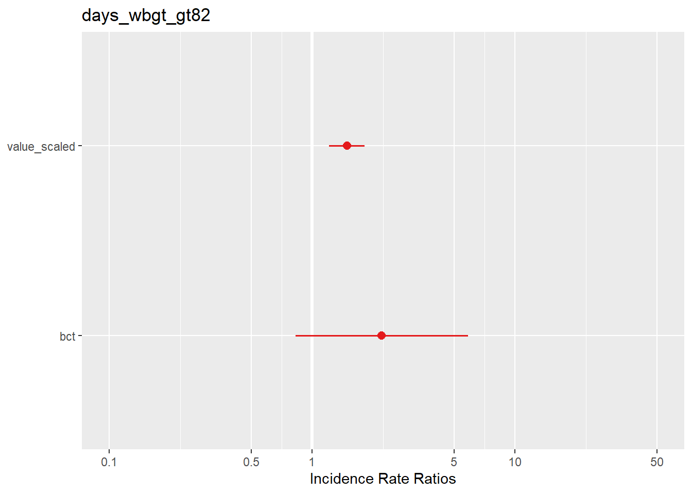
##
## [[7]]##
## [[8]]
##
## [[9]]##
## [[10]]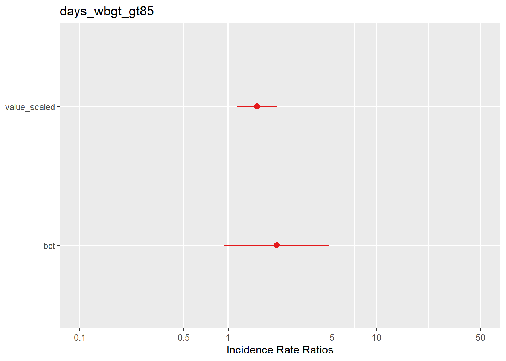
map2(.x = models_10, .y = models_10_names, .f = ~ sjPlot::plot_model(.x, type = "pred", terms = "value_scaled", title = .y))## [[1]]
##
## [[2]]
##
## [[3]]
##
## [[4]]##
## [[5]]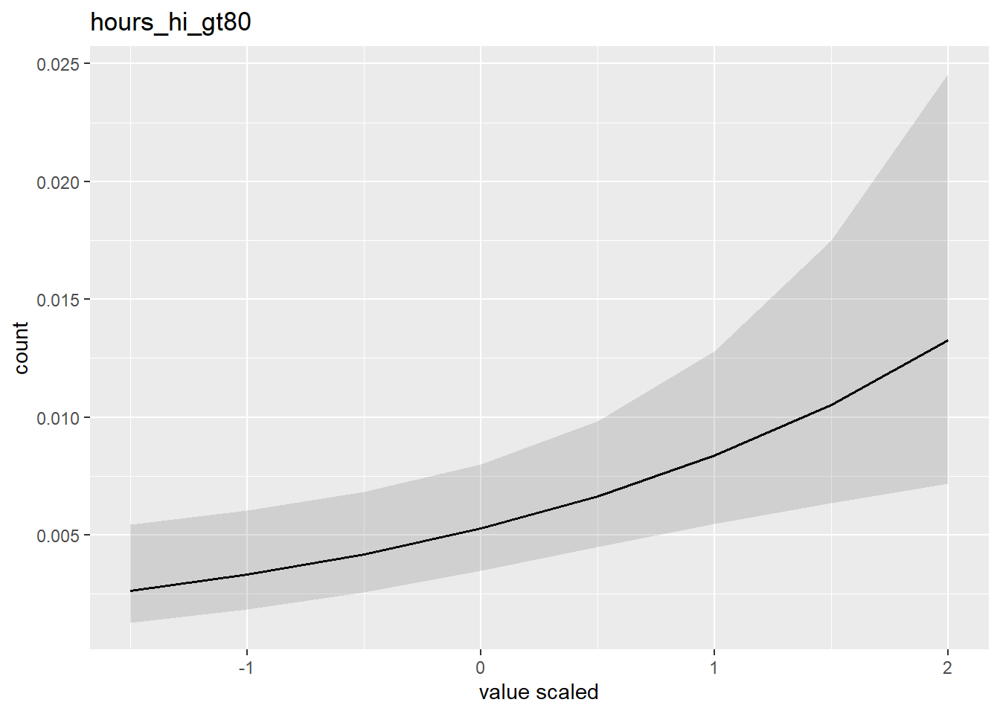
##
## [[6]]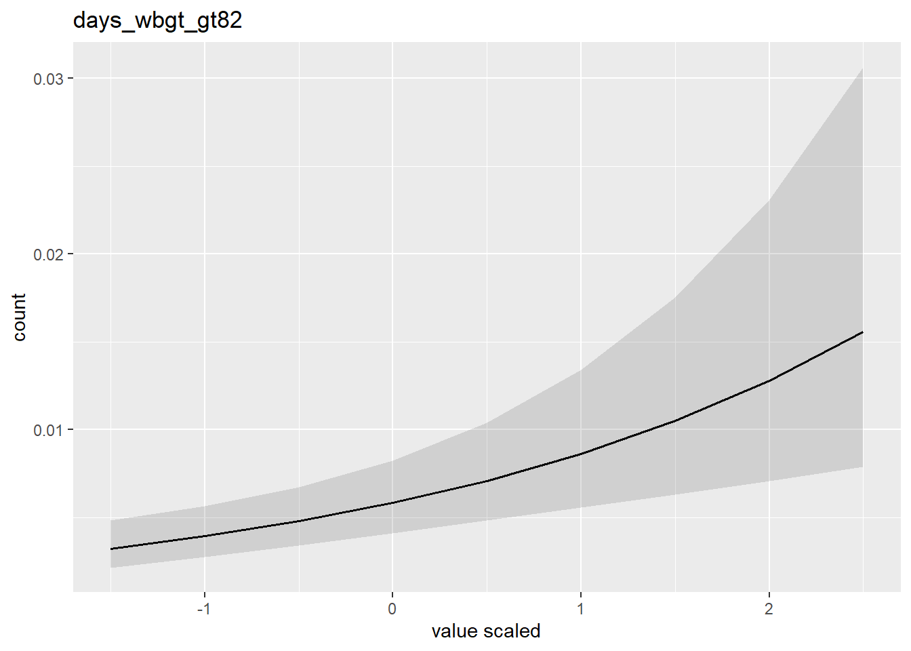
##
## [[7]]##
## [[8]]
##
## [[9]]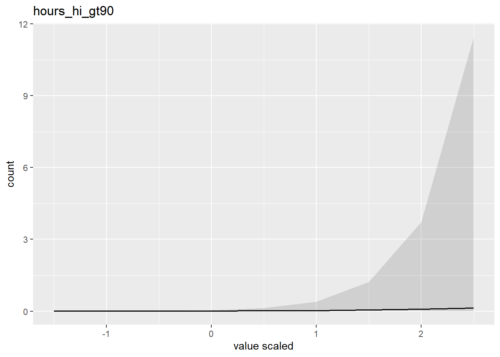
##
## [[10]]map2(.x = models_10, .y = models_10_names, .f = ~ sjPlot::plot_model(.x, type = "re", terms = "value_scaled", title = .y))## [[1]]##
## [[2]]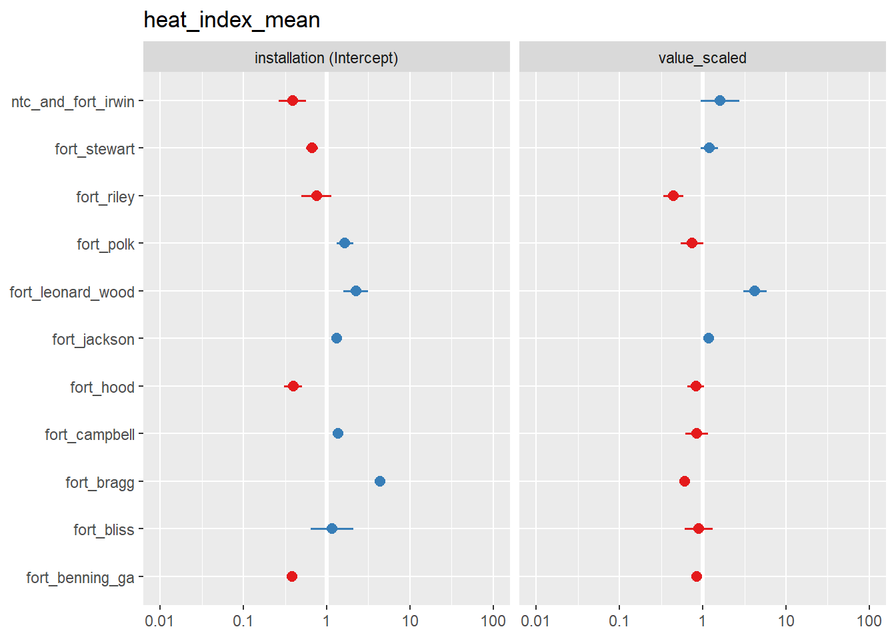
##
## [[3]]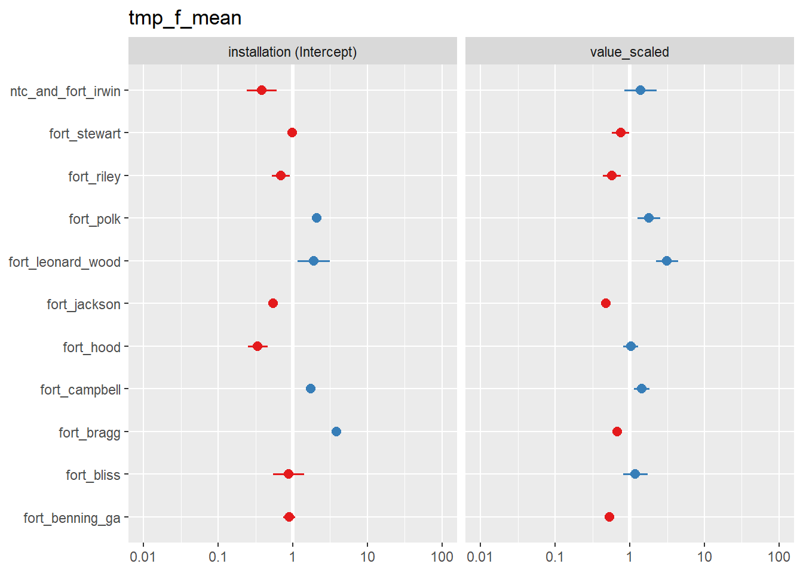
##
## [[4]]
##
## [[5]]
##
## [[6]]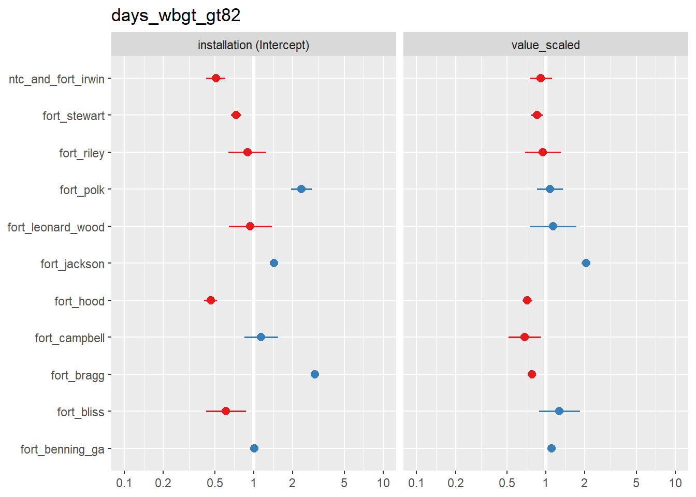
##
## [[7]]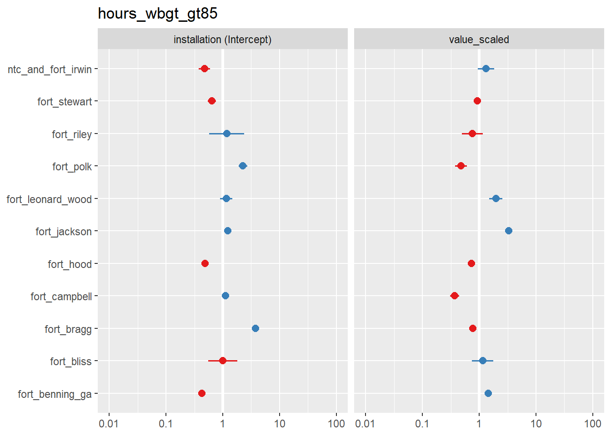
##
## [[8]]##
## [[9]]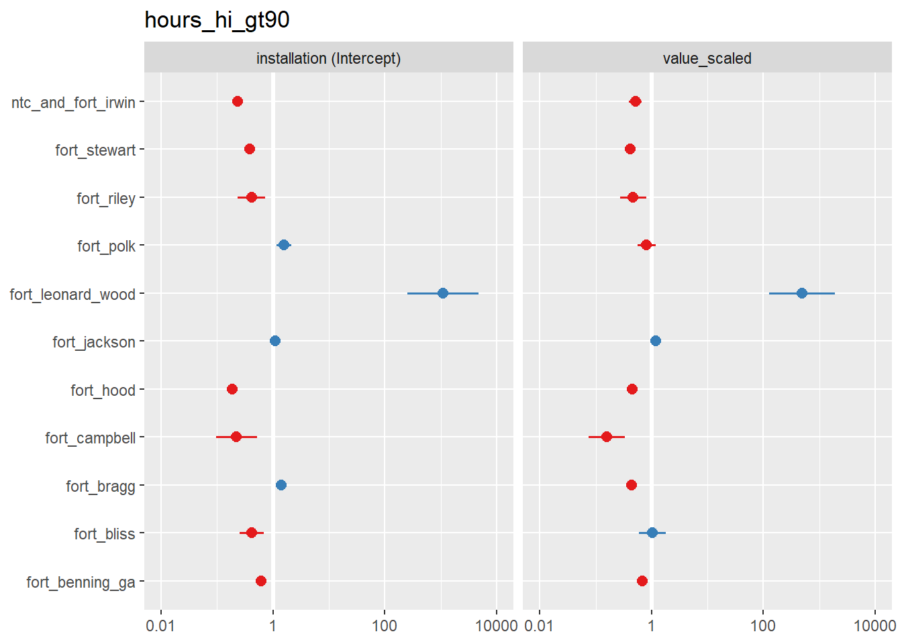
##
## [[10]]
index_mean_sd %>%
filter(index %in% models_10_names) %>%
knitr::kable(digits = 3) %>%
kableExtra::kable_styling()| index | mean | sd |
|---|---|---|
| days_hi_gt80 | 125.322 | 46.345 |
| days_wbgt_gt82 | 62.393 | 40.198 |
| heat_index_mean | 59.357 | 5.961 |
| hours_hi_gt80 | 1483.756 | 764.248 |
| hours_hi_gt90 | 491.434 | 391.567 |
| hours_wbgt_gt82 | 418.810 | 342.693 |
| hours_wbgt_gt85 | 194.095 | 187.493 |
| hours_wbgt_gt90 | 20.521 | 27.828 |
| tmp_f_mean | 60.022 | 5.840 |
| wbgt_f_mean | 55.561 | 5.139 |